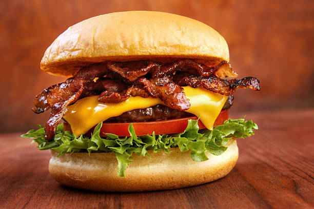

Bacon cheeseburger

A bacon cheeseburger is a hamburger topped with cheese and bacon.
Cheeseburgers can include variations in structure, ingredients and composition. As with other hamburgers, a cheeseburger may include toppings such as lettuce, tomato, onion, pickles, bacon, mayonnaise, ketchup, and mustard.
In fast food restaurants, the cheese used in cheeseburgers is usually processed cheese. Other meltable cheeses may be used as alternatives. Common examples include cheddar, Swiss, mozzarella, blue cheese, and pepper jack.
Ingredients
- Onions
- Burger buns
- tomatoes
- lettuce
- ground beef
- mayonnaise
- mustard
- ketchup
- american cheese
- bacon
Steps
- cook the ground beef and place cheese on top of patty when almost done
- toast the buns
- wash tomatoes and onions, and cut them into slices
- place mayonnaise, ketchup and mustard on buns
- cook bacon
- Assemble the patty, bacon, lettuce, onions ant tomatoesd together and enjoy